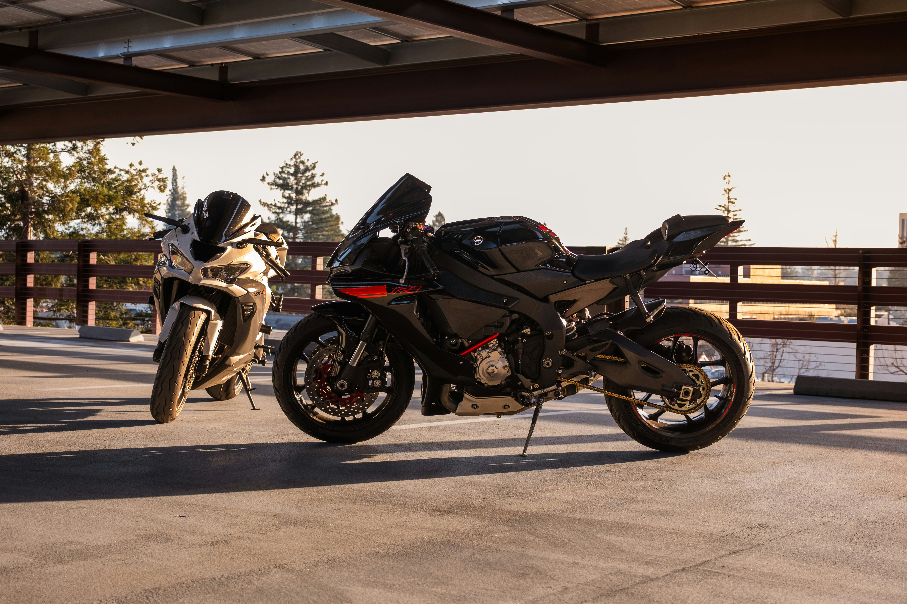
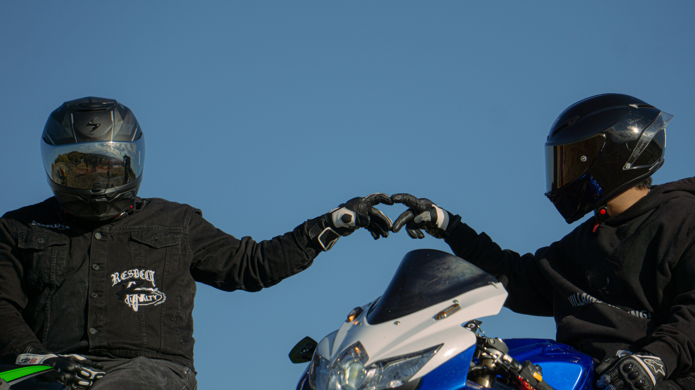

The Riders Handbook
A beginner-friendly resource designed to introduce new riders to the world of motorcycles. Whether you are considering your first motorcycle or are simply curious about riding, this guide will help you understand the fundamentals of motorcycling in a clear, organized way.
The World of Motorcycles
To many people, a motorcycle may seem like simple transportation—but to riders, it’s much more. Riding isn't just about getting from one place to another; it’s about the experience of the journey. When you ride, you feel connected to the world around you in a way a car can’t match. The wind, the road, and every turn become part of the experience. Motorcycling also brings people together. Riders from all backgrounds share a common respect for the road—and often for each other.


Motorcycles come in many styles, each offering a different experience. Some are built for long, relaxed rides, while others are made for speed and sharp turns. For many riders, motorcycling becomes more than a hobby—it becomes a passion. It shapes how they travel, what they explore, and the experiences they remember. Every rider starts somewhere, and that first spark of curiosity is where the journey begins.
Your Next Adventure
Every motorcyclist begins the same way: with curiosity. Maybe you saw a rider lean through a perfect corner, heard the deep rumble of a cruiser rolling down the street, or simply wondered what it would feel like to ride with nothing but two wheels between you and the open road. However it starts, that curiosity is the first step into the world of motorcycling. Learning to ride may seem intimidating at first. There are many types of motorcycles, different riding styles, and a surprising amount of skill involved in controlling a bike safely. But the truth is that every experienced rider once stood exactly where you are now—wondering where to begin. Motorcycling is a journey that starts with two simple steps: choosing the right bike and learning how to ride it well. With the right information and a little practice, that first spark of curiosity quickly turns into one of the most rewarding hobbies a person can discover.
Find the Right Bike
Motorcycles come in many different styles, each designed for a specific type of riding. Some are built for dirt trails, others for long-distance travel, and some for carving through twisty mountain roads. Choosing a motorcycle that matches your goals and experience level is one of the most important decisions a new rider will make
Learn to Ride
Riding a motorcycle is a skill that combines balance, coordination, and awareness. New riders learn how to control the motorcycle, shift gears, navigate corners, and read the road around them. With practice, these skills quickly become second nature and open the door to confident riding.
Building Confidence and Experience
Every ride teaches something new. The first smooth gear change, the first confident corner, and the first long ride all become milestones in a rider's journey. With time and experience, the motorcycle stops feeling like a machine and starts feeling like an extension of the rider.